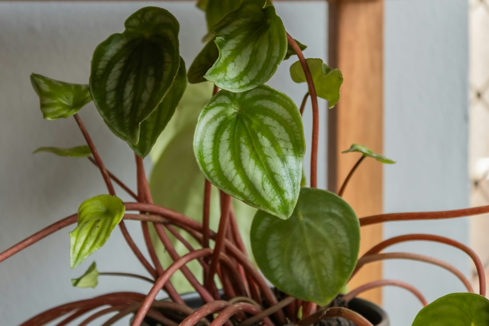
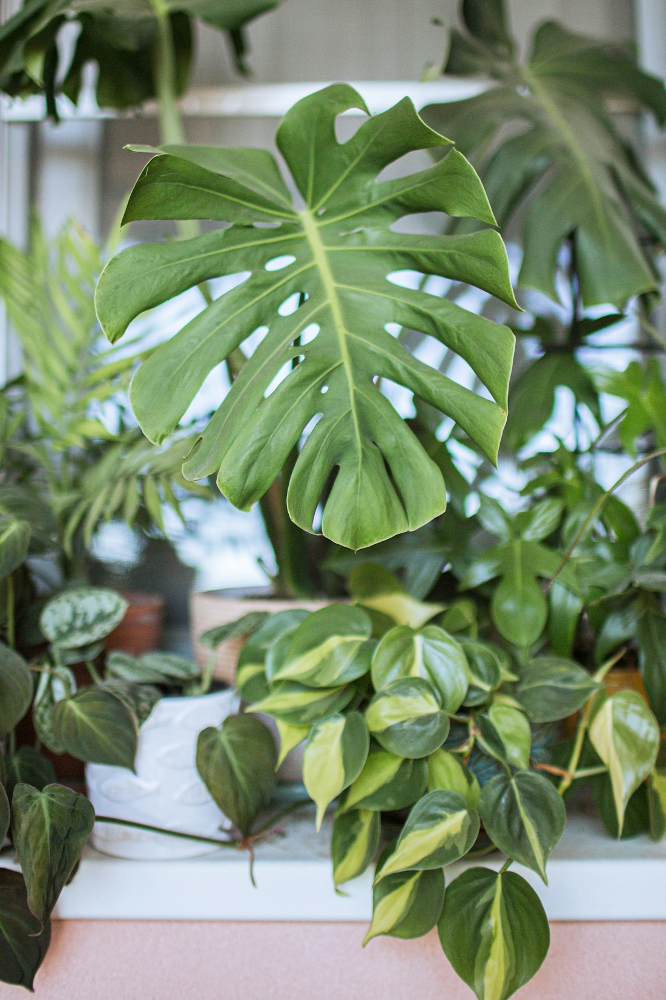

Хороший уход начинается с наблюдения
У каждого растения свой ритм. Несколько простых привычек помогут понять его и сохранить зелень дома.
Смотреть советы

Найдите подходящий свет
Большинству растений подходит яркий рассеянный свет. Прямое полуденное солнце может обжечь листья, а в глубине комнаты света часто мало.
Понаблюдайте за местом в разное время дня. В каталоге можно отфильтровать растения по освещению.
Подобрать по свету →
Сначала проверьте грунт
Не поливайте строго по календарю. Проверьте землю пальцем на глубине пары сантиметров и сравните с рекомендацией в карточке растения.
Сливайте лишнюю воду из поддона. Зимой рост часто замедляется, поэтому потребность во влаге меняется.

Дайте растению привыкнуть
Поставьте растение на постоянное место и не пересаживайте сразу без необходимости. Убедитесь, что в горшке есть дренажные отверстия.
Периодически осматривайте листья и следите за состоянием грунта: растение подскажет, когда условия стоит изменить.